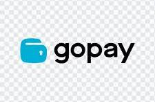
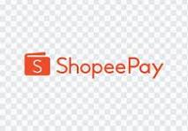
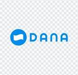
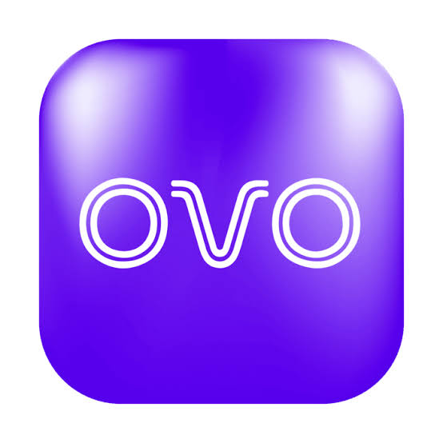
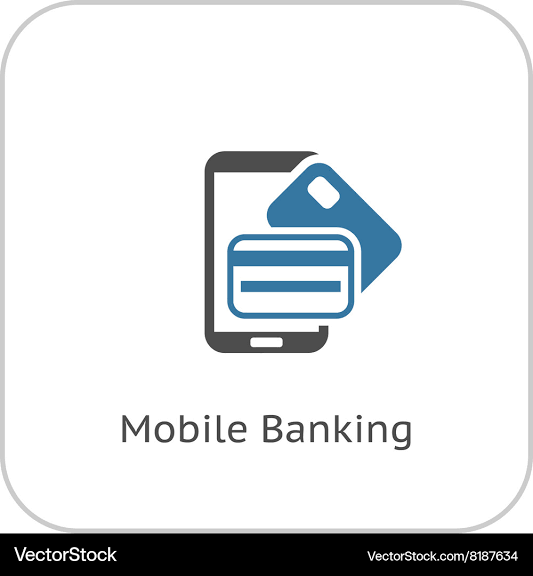

UMKM Desa Ciledug Wetan · Kec. Ciledug
Panduan ini disusun untuk Bapak dan Ibu pelaku usaha di Desa Ciledug Wetan yang ingin mulai menerima pembayaran nontunai. Bisa dibaca ulang kapan saja lewat kode QR di poster sosialisasi, meski sesi pendampingan sudah selesai.





tempel di meja kasir Anda
Mengenal QRIS
QRIS (Quick Response Code Indonesian Standard) adalah kode QR resmi dari Bank Indonesia yang menyatukan berbagai aplikasi pembayaran ke dalam satu kode QR yang sama.
Artinya, pembeli bisa membayar memakai aplikasi apa pun yang mereka punya, seperti GoPay, ShopeePay, DANA, OVO, atau m-banking, dan uangnya tetap masuk ke rekening usaha Bapak/Ibu. Cukup satu kode QR di meja kasir, tidak perlu banyak stiker dari penyedia yang berbeda-beda.
Di Desa Ciledug Wetan sendiri, ada sekitar 189 pedagang dan 100 pelaku UMKM, mulai dari warung harian sampai olahan rengginang dan tape. QRIS membantu semuanya menerima uang lebih cepat dan lebih rapi tercatat, tanpa perlu was-was uang kembalian palsu.
Langkah demi langkah
Urutan resmi ini berlaku di hampir semua penyedia layanan, baik bank, penyedia jasa pembayaran (PJP), maupun fintech yang menyediakan QRIS. Bisa didampingi langsung oleh tim KKM bila masih ragu.
Pastikan Bapak/Ibu sudah punya KTP, rekening bank, email, dan nomor HP aktif.
Bisa lewat bank, penyedia jasa pembayaran (PJP), atau aplikasi fintech seperti GoPay, DANA, ShopeePay, OVO.
Buat akun, isi data usaha, unggah KTP dan dokumen yang diminta, lalu tunggu proses verifikasi.
Data usaha Bapak/Ibu diproses oleh penyedia layanan untuk dibuatkan kode QRIS dan nomor TID.
Setelah jadi, kode QRIS bisa langsung diterima dan diunduh lewat aplikasi untuk disimpan.
Cetak kode QRIS lalu tampilkan di meja kasir agar pelanggan bisa langsung memindai dan membayar.
Tonton dan ikuti
Rekaman langkah demi langkah, bisa ditonton ulang kapan saja lewat kode QR di poster sosialisasi.
Tutorial 1
Langkah lengkap pendaftaran dari salah satu aplikasi pembayaran.
Tutorial 2
Simulasi transaksi memindai kode QRIS dari beberapa aplikasi berbeda.
Saat pelanggan membayar
Urutan yang dilakukan Bapak/Ibu setiap kali pelanggan membayar pakai QRIS di kasir.
Tempel stiker atau kartu QRIS di area yang mudah terlihat oleh pelanggan.
Bisa m-banking atau dompet digital seperti GoPay, DANA, ShopeePay, OVO.
Minta pelanggan memilih menu "Scan QR" atau "Bayar via QR" di aplikasinya.
Arahkan kamera ponsel pelanggan ke kode QRIS di meja kasir Bapak/Ibu.
Pelanggan mengisi nominal sesuai harga (QRIS statis), atau tinggal mengecek nominal yang sudah dibuat lewat aplikasi merchant (QRIS dinamis).
Pastikan nama usaha dan jumlah yang tampil di layar pelanggan sudah benar sebelum dikonfirmasi.
Minta pelanggan memasukkan PIN atau menyelesaikan konfirmasi di aplikasinya.
Transaksi selesai setelah muncul notifikasi atau suara konfirmasi pembayaran diterima di aplikasi Bapak/Ibu.
Interoperabel
Waspada & aman bertransaksi
QRIS aman digunakan, asal Bapak/Ibu mengenali ciri-ciri kode resmi dan tahu apa yang tidak boleh dilakukan.
Nama yang muncul di layar pembeli harus sesuai dengan nama usaha Bapak/Ibu.
Periksa berkala apakah kode QRIS di meja kasir masih asli, tidak tertutup stiker lain.
Jangan serahkan barang sebelum ada notifikasi pembayaran berhasil di aplikasi Anda sendiri.
Petugas resmi penyedia jasa pembayaran maupun bank tidak pernah meminta kode OTP atau PIN.
Masih ada pertanyaan?
Program ini berjalan selama masa KKM di Desa Ciledug Wetan. Silakan hubungi narahubung berikut untuk pendampingan lebih lanjut.